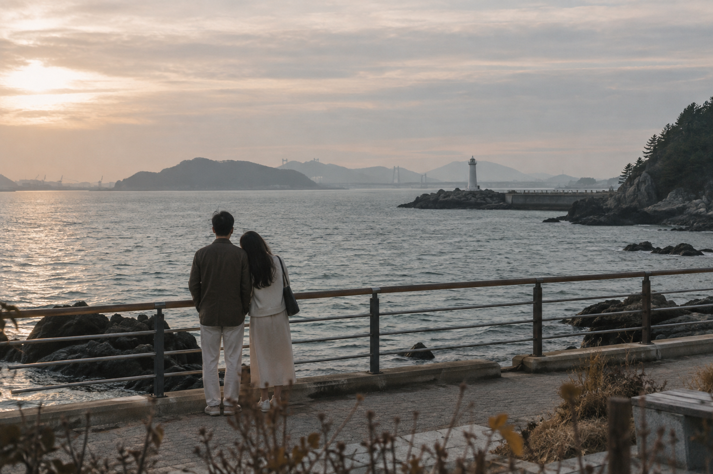
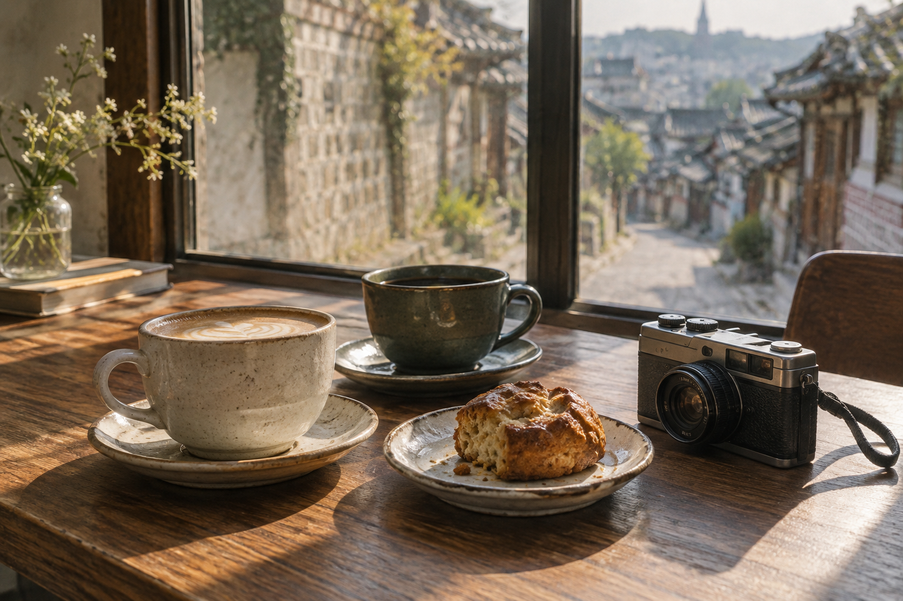

37.5446°N, 127.0559°EMONDAY · 맑음 24°
오늘도 우리 기록 중
우리의 이야기는
아직도 여행 중 ♡
NEXT JOURNEYD−3
군산, 느리게 걷는 2박 3일
9월 18일 — 20일 · 저장한 장소 8
서울군산

NEXT DATE · D−6
서촌 필름 산책
사진 한 롤, 커피 두 잔
OUR PLACES
둘이 함께 만든 장소의 지도
함께 가 본 곳 28 · 가고 싶은 곳 14
more places,
more stories,
with you.
UPCOMING TRIP · D−3
군산, 2박 3일
바다도, 시간도, 우리와 조금 더 가까워지는 여행.
DAY 19월 18일 · 금
네 곳DAY 29월 19일 · 토
세 곳
좋은 사람과
좋은 곳을 가는 것,
그게 여행이니까. N
✦
S 35.9677°N · 126.7366°E
좋은 곳을 가는 것,
그게 여행이니까. N
✦
S 35.9677°N · 126.7366°E
OUR ARCHIVE · 2026
함께여서 기억나는 장면들
사진보다 먼저 떠오르는 마음까지, 천천히 모아두었어요.
“어디를 가든,
결국 기억나는 건
그날의 우리.”